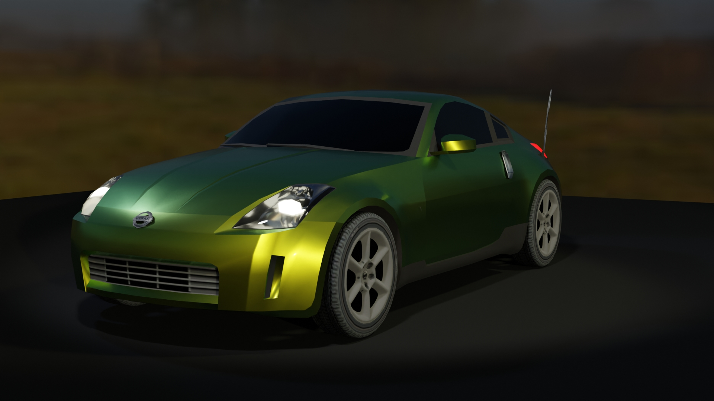
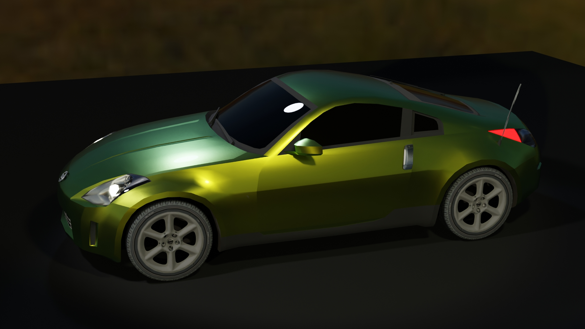
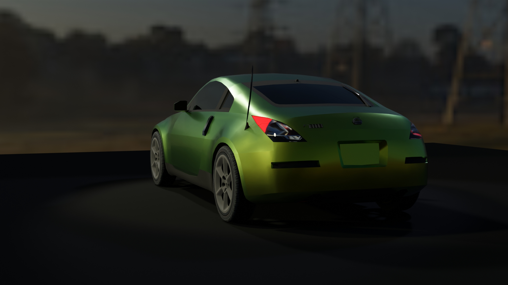
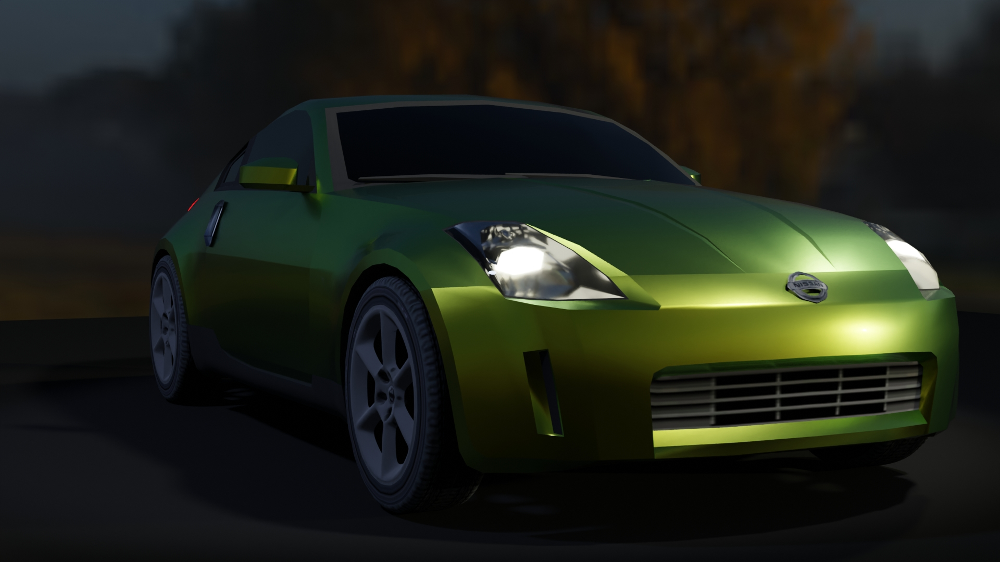
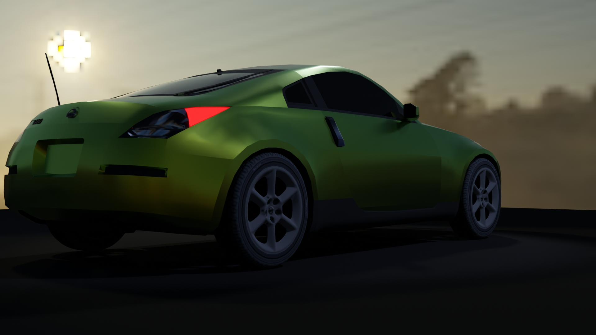
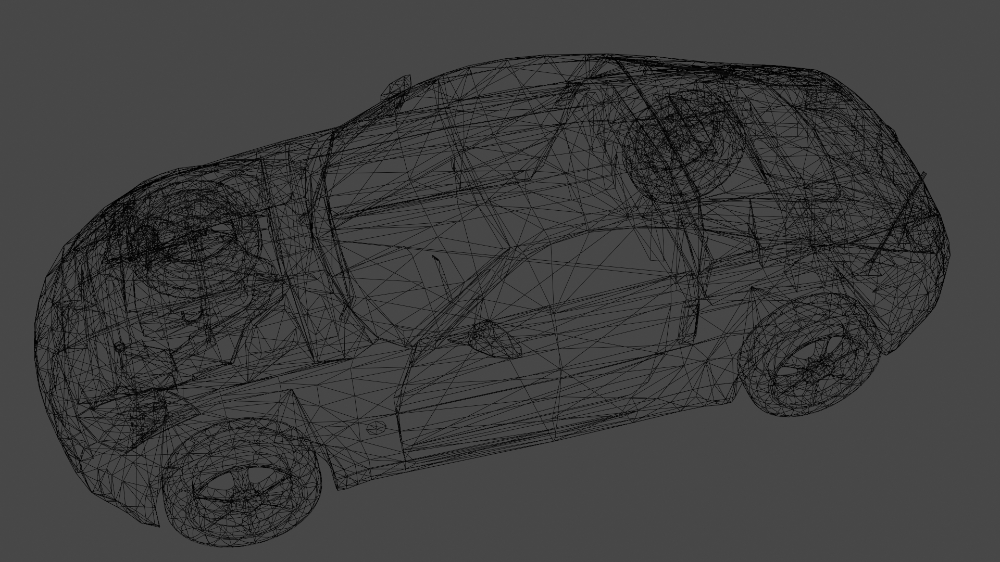

Nissan 350Z
Nissan 350Z modeled and textured after the version present in the game Need For Speed.






Nissan 350Z modeled and textured after the version present in the game Need For Speed.





